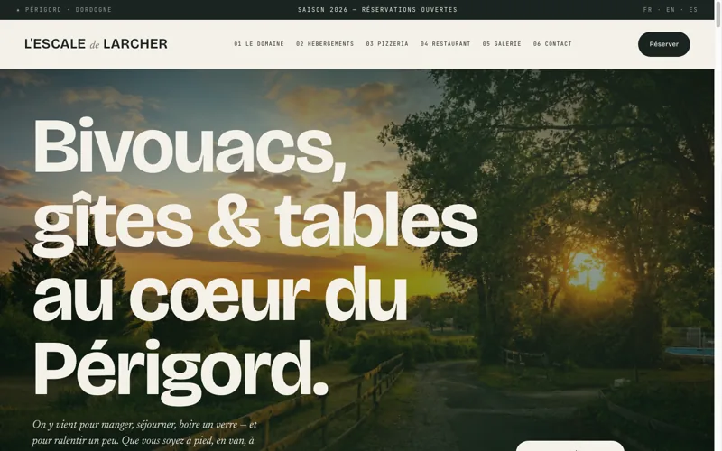

Développer
Concevoir des outils et des applications sur mesure, du prototype au produit fiable, avec un code clair et maintenable.
Concevoir des outils et des applications sur mesure, du prototype au produit fiable, avec un code clair et maintenable.
Analyser les processus existants pour éliminer les frictions, accélérer l'exécution et améliorer la performance mesurable.
Connecter les systèmes entre eux et déléguer les tâches répétitives à des flux automatisés qui travaillent en continu.

Bivouacs, gîtes en pierre et tables au cœur du Périgord Noir. Site vitrine complet : présentation du domaine, hébergements, pizzeria, galerie photo et parcours de réservation.
Voir le site ↗Une opportunité, un projet ou une question ? Écrivez-moi, je réponds sous 48 h.